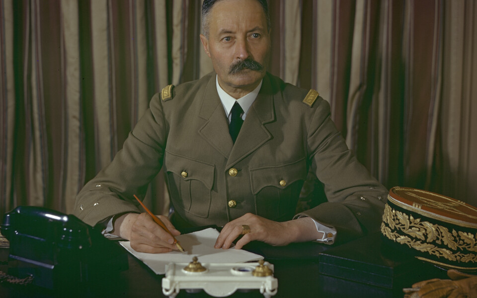

Le Boulevard du Général-Giraud
Le boulevard porte aujourd'hui le nom d'un résistant, le général Henri Giraud. Co-président, avec le général de Gaulle, du Comité français de libération nationale (CFLN), il est aussi plusieurs mois au pouvoir en Afrique française du Nord après le débarquement allié de novembre 1942 et l’assassinat de l’amiral Darlan.
